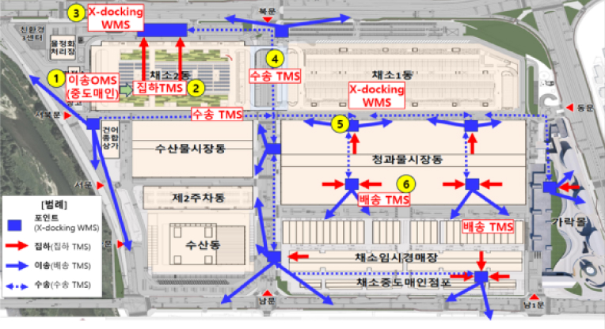
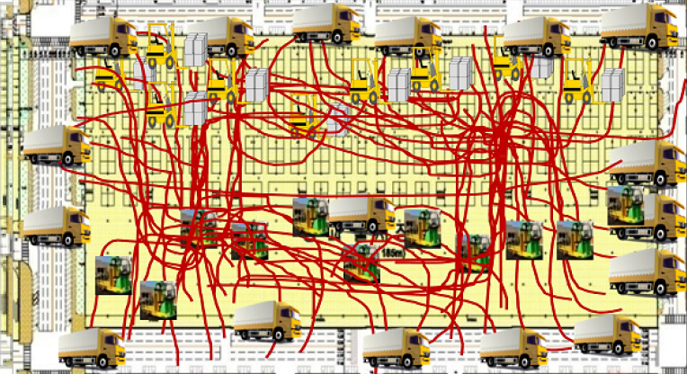

Purpose of promotion
- Control of supply and demand of agricultural products through advance prediction of incoming quantity
- Enhancing fair trade and encouraging transparent transactions
- Streamline distribution logistics and improve congestion within the market
- Laying the foundation for an advanced logistics system (OMS, WMS, etc.)
Operation overview
-
- Electronic invoice
(shipper, transport driver) - Enter electronic invoice
↓
Disclosure of scheduled import quantity
- Electronic invoice
-
- Shipping vehicle management
(Transport driver) - Transport vehicle registration
Electronic invoice matching
↓
Logistics movement, market
Display of imported information
- Shipping vehicle management
-
- Entry scheduling
(Wholesale corporation) - Unloading order designation
(manual, automatic)
↓
Unloading waiting time,
Unloading sequence information
- Entry scheduling
-
- Unloading inspection
(Wholesale corporation) - Electronic invoice inspection
Sales table conversion
↓
Public inspection results, Electronic auction linkage
- Unloading inspection
-
- Transfer/delivery instructions
(Shipper, transport driver) - Buyer shipping
Store transfer instructions
↓
Joint logistics system, linkage
- Transfer/delivery instructions
Roadmap
-
- 2023
- Establishment of Garak Market electronic invoice system and commencement of pilot project for 6 items (radish, cabbage, etc.)
-
- 2024
- Establishment of Garak Market entry scheduling system and introduction of all items / Introduction of Gangseo Market
-
- 2025 ~ 2026
- Settlement of 80% (top 30 items) of fruits and vegetables in Garak Market / Introduction of local wholesale market
-
- 2027
- Operation of a shipment-purchase demand matching system / Mandatory use of electronic invoices in nationwide wholesale markets
Joint Logistics and Delivery at Garak Market
Current Status and Challenges of Garak Market Logistics
- Excessive costs for individual logistics and deliveries are leading to rising
agricultural product prices.
- Individual logistics (35,000 personnel, 4,000 vehicles) results in extreme congestion and excessive logistics costs (2,364 billion KRW annually).
- Ongoing challenges with market congestion and delays due to individual transport
operations.
- Severe traffic congestion during peak hours (60% congestion rate, 70% exit rate) and chronic labor shortages among wholesale market workers.
- Increased social costs due to accidents and incidents occurring within the market.
- Application of the Severe Accident Punishment Act increases in workplaces with more than 5 employees and frequent safety accidents (average 1-2 times per day)
- Frequent complaints from local residents due to noise and congestion, weakening
competitiveness of wholesale markets.
- Proliferation of illegal parking and blockages around residential areas, roads, and apartments, leading to conflicts with residents and disruption of market operations.
- 
-
Before Implementing Joint Logistics
- 
-
After Implementing Joint Logistics
Transitioning from Individual Logistics to Joint Logistics Reducing Logistics Costs to Lower Agricultural Product Prices
Planned Phases for Joint Logistics Implementation:
- Phase 1
(2024 - onwards): - Introduce a new system for joint deliveries, prioritizing load reduction and efficient space usage.
- Phase 2
(2027 - onwards): - Expand the small success model to the entire market using direct logistics connections.
- Phase 3
(2030 - onwards): - Shift to a fully integrated outbound logistics system for efficient delivery after product aggregation.
- Phase 4
(2031 - onwards): - Implement a comprehensive fulfillment service to optimize joint logistics across different sectors.
Implementation of the Joint Transportation and Delivery Project for Vegetable Building 2
- Project Duration: March 22, 2024 ~ December 31, 2027
- Operating Company: Korea Logis Pool Consortium
- Logis Pool (Supply of manpower and equipment), SK (System and ICT), DITAS (Management of distributors and customer service)
- Target Items: Radish, cabbage, green onion, and other items housed in Vegetable Building 2
- Execution Method: Point-to-Point transportation using a system-based approach
※ Logistics hubs within the market serve as the base for transportation and delivery logistics.
- Eligible Participants: Intermediate wholesalers based in Vegetable Building 2
- Contact for Participation: +82 2-6283-0130 (Available Hours: 10:30 PM ~ 7:30 AM)
Expected Benefits of Joint Logistics
- Quantitative Effects: Reduction in logistics handling equipment and storage space by 53.7% Reduction in logistics costs by 31.9%
- Qualitative Effects: Improvement of logistics environment through innovation in market
logistics systems
- Efficiency and standardization of agricultural logistics systems: Transition from reliance on skilled know-how to system-based management.
- Mitigation of congestion and reduction of safety incidents: Enhanced logistics environment addressing major safety concerns and compliance with the Serious Accident Punishment Act.
- Addressing workforce shortages and aging issues: Improved working conditions for logistics personnel through corporatization of logistics operations.
- Resolution of community complaints near the market: Reduction of traffic congestion, noise, and pollution impacting nearby residents
Promotion background
- The need for commercialization facilities due to changes in consumption patterns
- Smart logistics center is needed to advance the industrial ecosystem
- After completion of the modernization project, the common delivery site site,
which will be created as an open parking lot, will be developed into a smart logistics hub.

Development plan
-
- Development
concept - Smart logistics center (wholesale market function + complex logistics facility + agricultural and fishery industry facility)
- Development
-
- Building site
- 94,574㎡
-
- Building site
- At least 3 floors (about 80,000㎡ per floor)
- (1st floor) Smart joint delivery area
- Delivery to wholesaler product purchase location
-
- Joint selection center → Listing
- Buyer delivery parking lot
- (2nd floor) State-of-the-art commercialization logistics zone
- Horizontal connection commercialization with each wholesale building
-
- Cold storage, repackaging, sub-divider plant
(Online/offline commercialization)
- Cold storage, repackaging, sub-divider plant
- (3rd floor and above) Smart BIZ Hub
- Incorporation of private business value chain
-
- Vendors, support facilities
- Online and offline distributors
Bird's eye view
Guidelines for the Adoption of Online Wholesale Market Trading Standards for Government-Supplied Agricultural Products
- With the launch of the Ministry of Agriculture, Food and Rural Affairs' Agricultural Products Online Wholesale Market (www.kafb2b.or.kr) on November 30, 2023, and the expansion of product categories to include processed foods and seafood on May 1, 2024, the name will be changed to the Agricultural and Fishery Products Online Wholesale Market in May 2024. Please be advised of the following requirements when bringing goods traded on the online wholesale market into Garak Market.
-
1. Items Allowed for Entry :Products traded and completed by Garak Market wholesale
corporations and intermediaries in the Agricultural and Fishery Products Online Wholesale
Market can be brought into Garak Market if the 'delivery destination' is designated as
'Garak Market' (this serves as an entry declaration) with the transport vehicle number
entered correctly.
The online wholesale market operator (aT) transmits the entry information for Garak Market transactions to the corporation in real-time. -
2. Market Usage Fee Payment :0.5% of the transaction amount (reduced to 0.35% until
2025 to encourage activation).
- Market usage fees will be charged monthly for goods brought in after the opening of the online wholesale market (November 30, 2023).
※ A system is being developed to allow the Agricultural and Fishery Products Online Wholesale Market (aT) to provide information on the imposition and payment of market usage fees. -
3. Those in charge of paying market usage fees and those subject to the charges
부담주체, 부과대상으로 구성됨 Burden subject subject of imposition Intermediaries Fees are imposed on intermediaries for the transaction performance of goods purchased from sellers in the online wholesale market and brought into Garak Market.
* Consignment Sellers : (Wholesale corporations nationwide, including Garak Market, public markets), Direct Sellers: (Regional producer organizations )Buyer-Sellers: (Market intermediaries)Wholesale Corporations (Public Markets) Wholesale corporations will be charged market usage fees for the transaction performance of items sold to buyers who are not intermediaries of Garak Market but are brought into Garak Market after being sold through the online wholesale market. - 4. Transaction Performance Reflection : For online wholesale market transactions involving goods delivered to Garak Market with market usage fees applied, the transaction performance will be reflected in the minimum transaction records of wholesale corporations (public markets) and intermediaries
- 5. Data Management :The online wholesale market transaction data of wholesale corporations (public markets) is managed separately from the offline transaction data of Garak Market, ensuring that it is not included in Garak Market's offline transaction records.